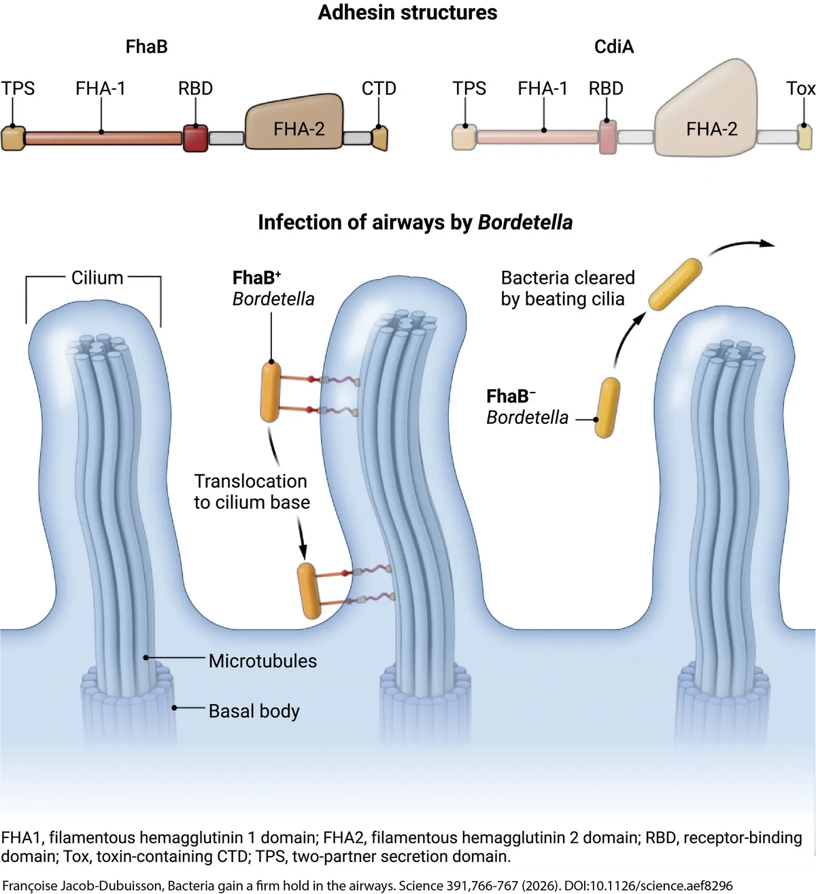
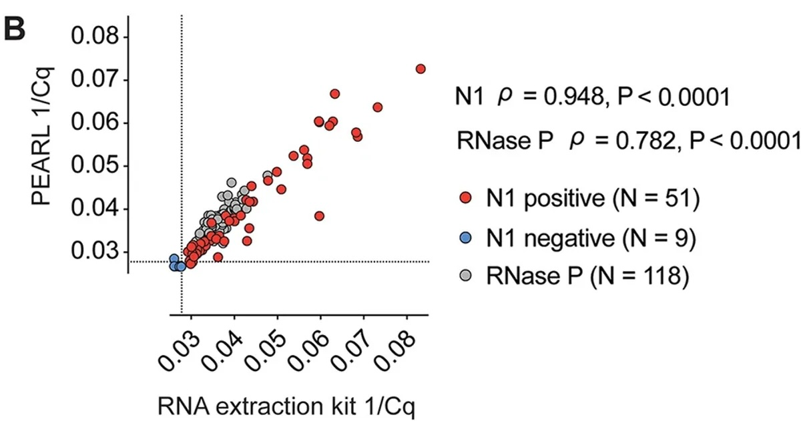
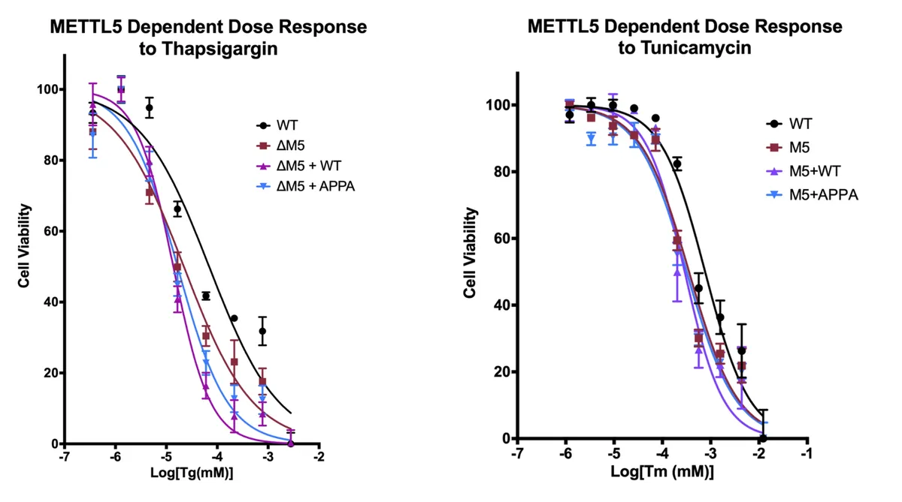
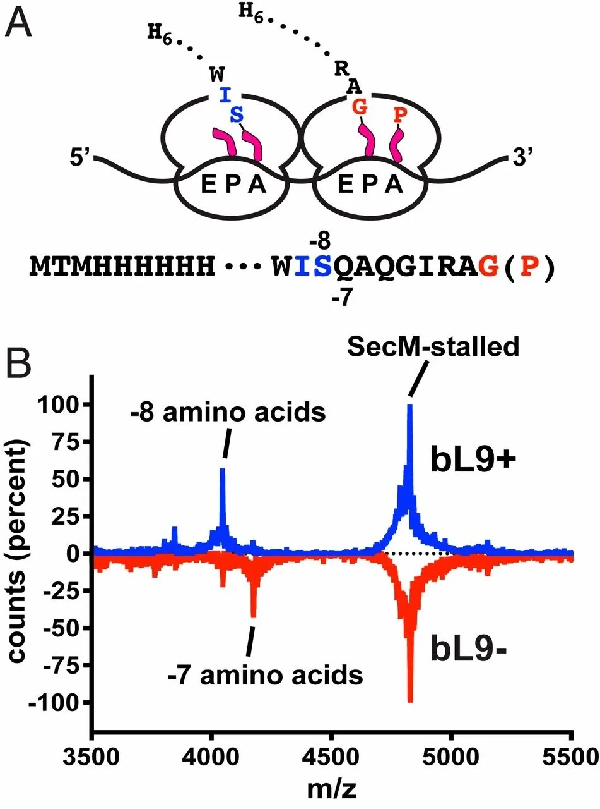

research
Molecular machines.
I grew up taking things apart and putting them back together — electronics, dirt bike motors, whatever. I think this is why I've gravitated towards molecular machines. I've examined the systems that both bacteria and metazoans use to interpret insults, factors that enforce fidelity of protein synthesis machinery, and the exquisite machines bacteria use to translocate toxic cargos across target cell membranes. Below are some highlights.
2022 – present · UCSB
Contact Dependent Inhibition Systems Are Capable of Inter-Kingdom Targeting

After the pandemic, Chris, David, and Diego got a grant to study a non-canonical Contact-Dependent Inhibition (CDI) system and felt I would be suited to get the project off the ground. CDI systems are found in most Gram-negative bacteria and allow bacteria to compete for resources in their niche. Briefly, Zach Ruhe found that these systems undergo secretion arrest, with their receptor-binding domain distal to the inhibitor cell surface and toxic C-terminus retained in the periplasm. Upon receptor recognition, secretion resumes and the C-terminus is translocated into the target bacterium. Target bacterium intoxication results in a competitive advantage for the inhibitor cell. In my work, I've found that the FhaB adhesin system from the respiratory pathogen Bordetella functions much like a CDI system. However, instead of translocating a toxin across bacterial membranes, FhaB deploys a microtubule-binding domain across mammalian cell membranes. This molecular grappling hook allows Bordetella to engage with peripheral microtubules in ciliated cells and move to the cilium base. Typically, microbes are ensnared by mucus and escorted out of the airway via rapid and concerted beating of cilia coupled to a good cough. We think FhaB-mediated occupation of this basal niche affords Bordetella a safe-haven, shielding microbes from the immense shear force imparted by the mucociliary escalator. This was an all-time project. I probably peaked too early, but whatever. Before you or I forget all about this, please read the wonderfully-written perspective tagged under the photo — words by Françoise Jacob-Dubuisson and Camille Locht, illustrations by Austin Fisher! Also, Andrea Du Toit's highlight is great too!
2020 · UCSB
You Don't Need a Fancy Qiagen Kit to Test for Viral Infection

So the backstory here is that Carlos, Diego, and I were stuck at home during the COVID going insane. We figured we might do something useful and fashioned a cheap, non-toxic, and easy-to-use reagent to extract RNA from nasal turbinates for viral testing. The idea is that communities with fewer resources might not have the means to afford commercial testing regimes. If you have molecular sympathy, you don't have to spend $5 to reliably extract RNA from a patient sample — you can actually do it for ~$0.18 without sacrificing detection sensitivity. This project was fun. I got to do a ton of things like 3D print nasal swabs (sketchy) and hand-powered centrifuges (more sketchy). Check out supplemental fig 5A for a pic of Olivia ripping my 3D printed hand-fuge.
2019 – 2022 · UCSB
A RNA Methyltransferase Tunes the Integrated Stress Response

I joined Diego's lab at UCSB in 2019 thinking about translation reprogramming during the integrated stress response (ISR). We had just started experiments looking at ribosome heterogeneity during the ISR when I met our departmental colloquium keynote speaker, Dr. Yang Shi. Turns out his post-doc, Hao Chen, had just discovered a ribosomal methylation that enhanced translation efficiency of ISR targets. After some discussion, Dr. Shi invited me to his lab for a sabbatical in the Spring of 2020. I was thrilled. I moved to Jamaica Plain and hit the ground running... for about 3 weeks. The children's hospital closed non-essential research and I flew back to CA. A month later, Eric Green's group published an article in Science Advances on the methyltransferase and its role in stress resistance. Check out the Green lab's paper below.
post-graduation · UCF
RPL9 Alters Inter-Ribosomal Spacing During Ribosome Collisions

After I finished my undergraduate degree, Sean offered me a technician position to focus on ribosomal protein L9. RPL9 was known as a translation fidelity factor for many years, but we didn't know how it worked. There were some biochemical and structural studies demonstrating L9 on leading ribosomes interacting with trailing ribosomes, so Sean hypothesized that L9 may influence ribosome spacing. I designed a construct to stall and collide ribosomes and asked whether peptide length of the trailing ribosome changed as a function of L9 occupancy. It turns out that ribosomes lacking L9 pack closer to one another. Sean and Angela hypothesized that this dense packing prevented E-site tRNA egress. And it does. So L9 enhances translation fidelity by preventing dense packing in ribosome traffic jams. Such a great story — check out the paper below.
undergraduate · UCF
Foray into Research

During my undergraduate study at UCF, I cold-called Sean and asked whether he would help me test a wacky hypothesis that propylene glycol (main vape constituent — known bactericidal) would prompt a gene expression change in nasopharyngeal bacteria. In hindsight, I was probably more fit for a dishwashing role. Either way, Sean agreed and that was a pretty lucky thing because I found the only person at UCF with experience in electrical engineering and bacterial physiology. So I developed an automated vape chamber and cultured bacteria in it to test whether gene expression changes as a function of vaping. It doesn't, but check out a cool video of the chamber.